Reverse Pink Bean is a Balance Mode boss event where five entities each apply unique status effects to the entire party. The central loop is mechanical: each effect has a specific counter action that removes it. Players who know the counters can manage the debuffs actively; players who don't will find their skills locked, rage drained, or stats halved for the duration of each circle.
Quick reference
| Entity | Ability | Effect | Counter |
|---|---|---|---|
| Pink Bean | Golden Glow | 1–2 players transformed into Pink Bean; subjected to constant attacks | — |
| Pink Bean | Reverse Light Pillars | Many light pillars summoned throughout the map | Dodge pillars |
| Pink Bean | Counter-Damage State | Rebounds a % of damage dealt back to attacker | Stop attacking — wait for state to end |
| Pink Bean | Invincibility / Portal | Pink Bean becomes invincible | Go through portal → defeat 2 statues → removes invincibility |
| Pink Bean | Statue Resurrection | Defeated statues revive every 60 seconds | Each defeat grants Temple Blessing + reduces Pink Bean's HP |
| Goddess Statue | Glory Circle | Summons 4 Guardstones; Statue goes invincible | Destroy all 4 Guardstones → removes invincibility |
| Goddess Statue | Flyleaf Rampage | Full-screen AoE attack | Triggered if Guardstones not destroyed in time — don't delay |
| Sage Solomon | Immortality Circle | All players receive Immortality; healing amount reduced | — |
| Sage Solomon | Flying Leaves | Leaves appear during Immortality Circle; hit = rage reduced + Monk Trainee (no skills) | Dodge leaves — do not get hit |
| Sage Lex | Weakness Circle | All players: Crit Rate ↓, Damage ↓, Skill Cooldowns ↑ | Pick up ALL meats that spawn on the map → removes Weakness |
| Firehawk Statue | Sealing Circle | All players: automatic skills prohibited | Avoid stone hammers — each hit extends seal duration |
Pink Bean — main boss
Pink Bean releases Golden Glow, randomly selecting 1–2 players and transforming them into Pink Bean. Players who are transformed are immediately subjected to constant attacks for the duration of the effect.
No direct counterIf you are transformed, you will take continuous damage. Survive with HP management. Other players cannot easily remove this from you — endure until the effect expires.
Pink Bean summons a large number of light pillars intertwined throughout the map. The pillars persist for the duration of the ability and deal damage on contact.
CounterMove between pillar gaps. The map becomes significantly more restricted — prioritise positioning over offensive output during this phase.
Pink Bean releases counter-damage, entering a state where it rebounds a percentage of all damage dealt by players back to the attacker. Continuing to attack during this phase injures your own team.
Stop attackingThis is the single most important mechanic to recognise. Any damage output while the counter-damage state is active is returned to you. Wait for the state to end before resuming attacks.
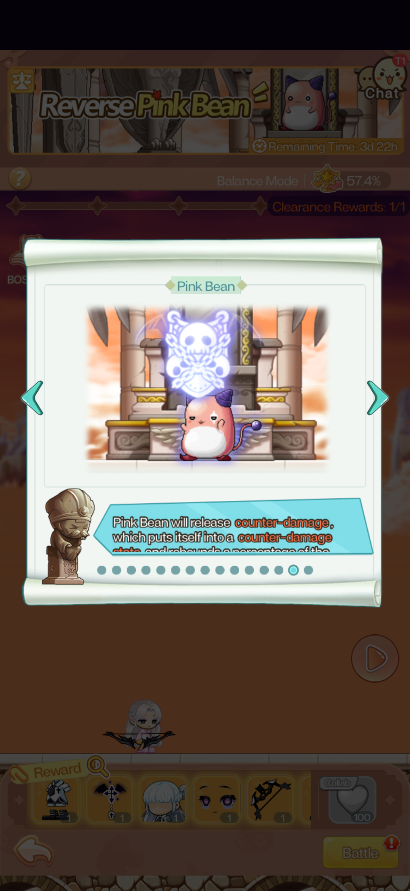
Pink Bean enters an invincible state, immune to all damage. To remove the invincibility, players must go through the portal that appears on the map and defeat the two statues beyond it. Once the statues are defeated, Pink Bean removes its own invincibility.
CounterLocate the portal immediately when Pink Bean goes invincible. Pass through, defeat both statues as quickly as possible, then return to the main area. Do not waste time attacking Pink Bean while it is invincible — the damage is nullified.
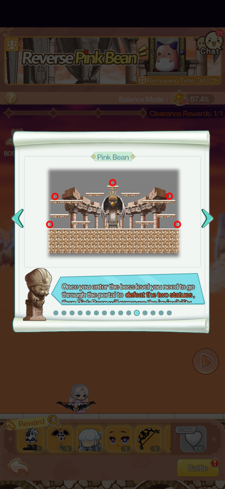
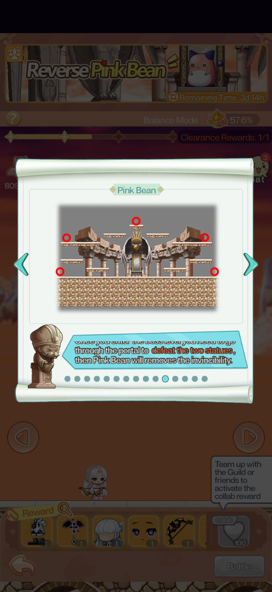
Every 60 seconds, any defeated statues are resurrected. This is a persistent cycle throughout the encounter. Each time a statue is defeated, it gains the Temple Blessing effect — and each defeat also reduces Pink Bean's HP directly. Repeatedly killing the statues is the primary source of HP reduction on Pink Bean.
PriorityStatues should be killed as frequently as possible. Every kill reduces Pink Bean's HP regardless of the resurrection cycle. Do not treat the statues as secondary objectives — they are the most efficient damage path.
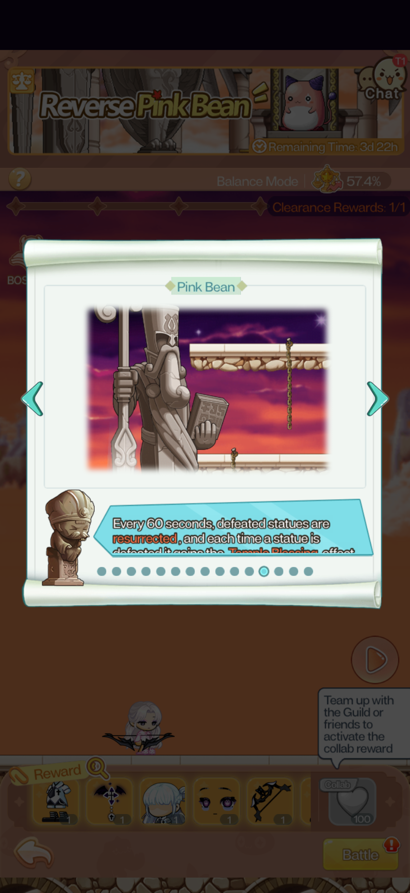
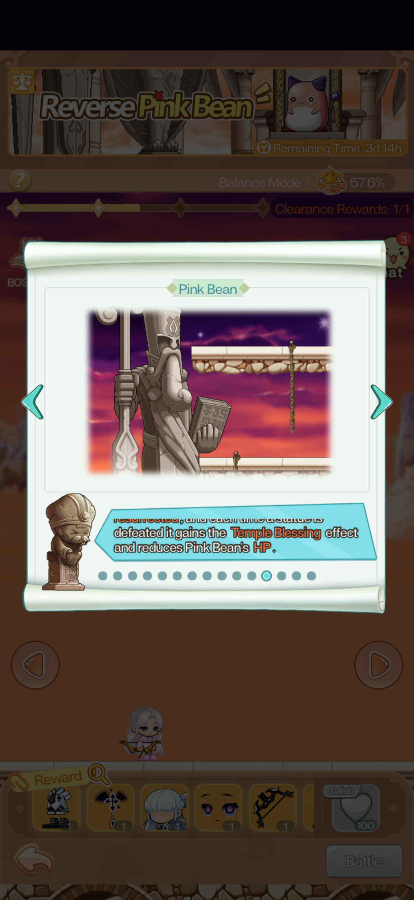
Goddess Statue — Flyleaf defense
The Goddess Statue releases a Glory Circle — triggering the "Flyleaf defense mechanism" — summoning 4 Guardstones and entering an invincible state immune to all damage. The invincibility persists until all 4 Guardstones are destroyed.
CounterDestroy all 4 Guardstones as quickly as possible. Split attention with teammates to clear them simultaneously — sequential clearing is slower than parallel. The Goddess Statue is entirely immune until all four are down.
If the Guardstones are not destroyed within the time limit, the Goddess Statue ends its invincible state by rampaging — releasing a full-screen attack that hits all players.
Time pressureThis is a punish mechanic for slow Guardstone clearing. The full-screen attack is unavoidable. Prioritise Guardstone kills above all other targets when the Glory Circle is active.
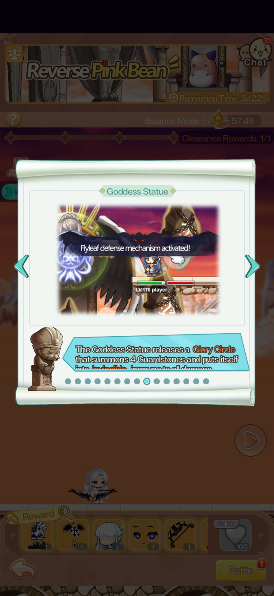
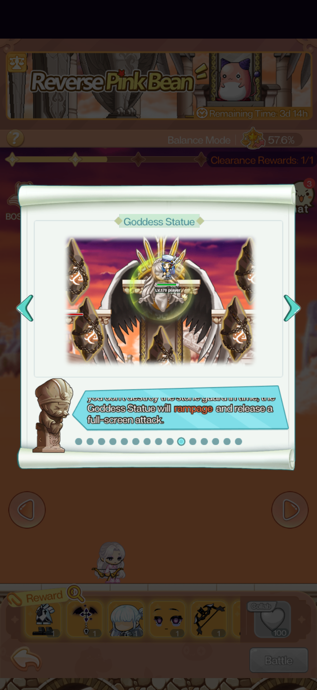
Sage Solomon — Immortality Circle
Sage Solomon releases an Immortality Circle, applying Immortality to all players — while simultaneously reducing the amount of healing all players receive. The Immortality prevents instant kills but the healing reduction makes the prolonged fight more dangerous.
Healing is reducedDo not rely on heals to sustain through this phase — they will not restore as much as expected. Manage your HP conservatively and avoid taking unnecessary damage while the circle persists.
While the Immortality Circle is active, a large number of flying leaves spawn across the map. Being hit by a flying leaf applies two effects simultaneously: your rage is reduced, and you are transformed into a Monk Trainee, which prevents you from releasing skills for the duration.
CounterDodge the leaves. The Monk Trainee transformation is the more severe effect — losing the ability to use skills during an active boss phase significantly reduces your output and survivability. Treat leaves as high-priority hazards, not cosmetic effects.
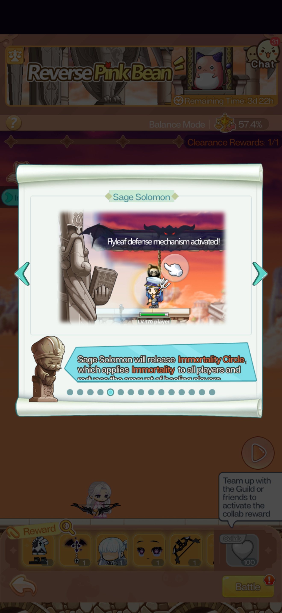
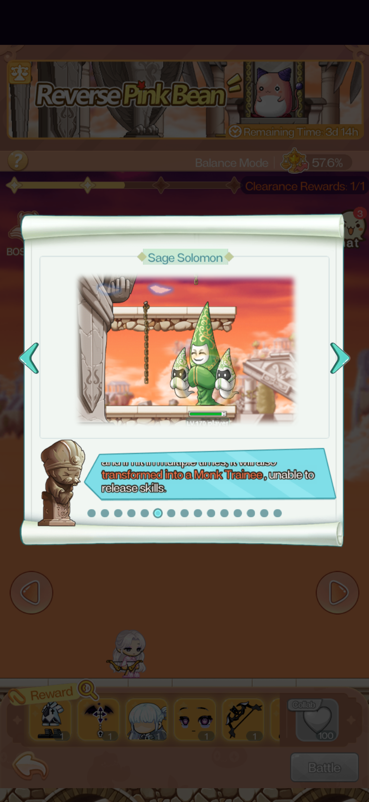
Sage Lex — Weakness Circle
"Taste the weakness and powerlessness!" — Sage Lex releases a Weakness Circle that applies a Weakness status to all players simultaneously. The Weakness effect reduces Crit Rate, reduces Damage output, and increases Skill Cooldowns.
Counter — collect all meatsWhile the Weakness Circle is active, meats appear across the map. Picking up all of the meats removes the Weakness status entirely. This is a timed collection mechanic: your team must gather every meat before the circle expires to cleanse the debuff. Missing any meat leaves the Weakness status active.
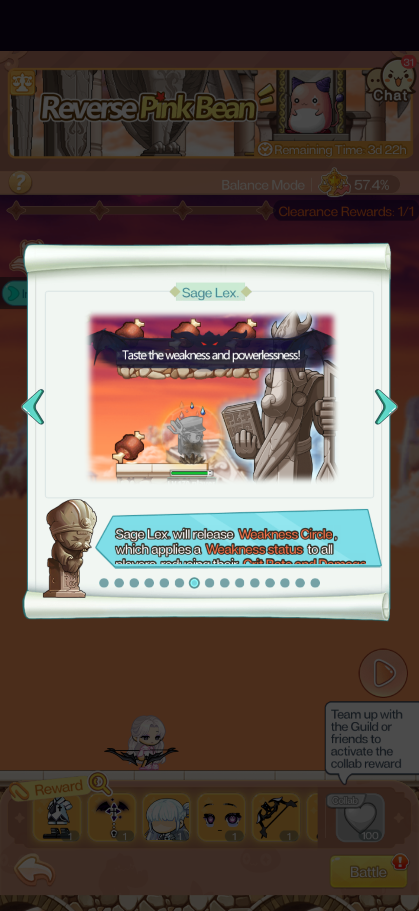
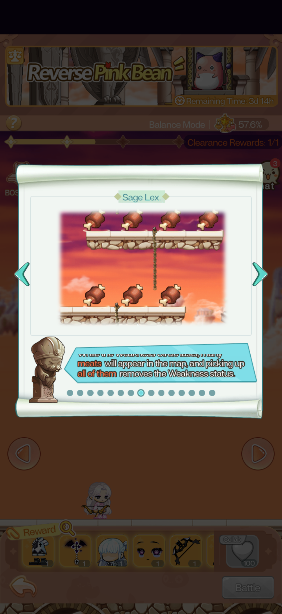
Firehawk Statue — Sealing Circle
"Feel the pain of being sealed!" — The Firehawk Statue releases a Sealing Circle that applies a Sealing Status to all players, prohibiting the release of automatic skills for the duration. Manual skills are unaffected; only auto-triggered skills are suppressed.
While the Sealing Circle is active, stone hammers appear on the map as projectiles. Each time a player is hit by a stone hammer, the duration of their sealed state is extended. Accumulating multiple hammer hits significantly prolongs the skill lock.
Dodge hammersBeing hit once extends your seal. Being hit repeatedly can lock your auto skills for far longer than the base circle duration. The Sealing Circle is tolerable; the extended seal from hammer hits is not. Prioritise hammer avoidance over offensive positioning while sealed.
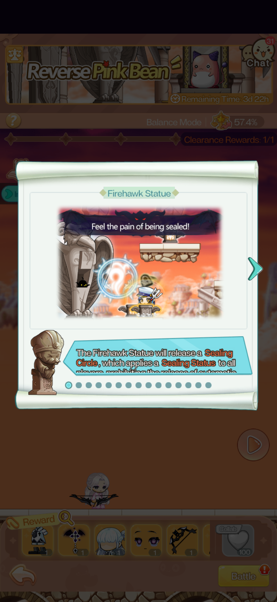
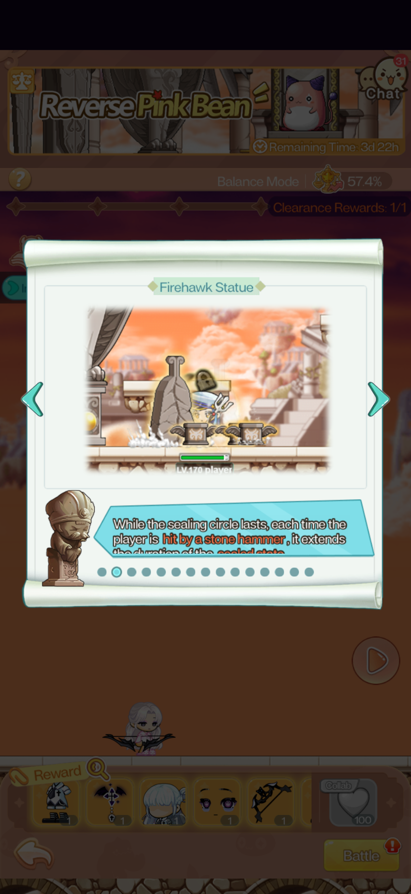
General notes
Collab reward
Teaming up with Guild members or friends activates the Collab reward (100 points). The Collab bonus appears to be a separate reward track from the standard clearance reward — you can earn both. Enter as a duo or group to unlock it.
Balance Mode and recommended level
The event runs at Balance Mode — stats are normalised to approximately 57.4–57.6% of your base power. Recommended player level is LV.170. If you are significantly below this level, you will notice disproportionate difficulty with the mechanics rather than just raw damage checks.
The clearance reward is 1/1 (one daily clear). Additional clears beyond the first do not yield more clearance rewards, but you may wish to replay for Collab points or practice with the mechanics.